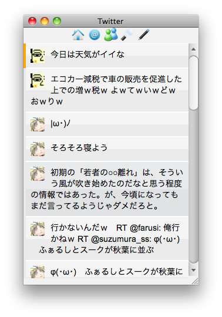

Quick & Powerful Ruby Desktop Applications
id:basyura
Quick & Powerful Ruby Desktop Applications
goo 辞書
bowline [bóulin] → ぼうりん
[名]1 もやい結び(bowline knot).2 《海事》はらみ綱.on a bowline《海事》（帆を）詰め開きにして.
Alex : ばうりん(と聞こえる)
好きに呼んでくれと言っている
"ばうりん" と呼びます
正しい読み方を教えて！！
Quick & Powerful Ruby Desktop Applications の紹介
- GoRuCo 2010 -
The Gotham Ruby Conference (GoRuCo) is a one-day event
that will take place in New York City on May 22nd, 2010
http://vimeo.com/12793105
の紹介動画を参考にして(パクって)います
wxWidgets
C++ app frameworkWebKit
the rendering engine behind Safari & ChromeRuby 1.9
A dynamic, open source programming languagerubygems
こまったときのライブラリ群HTML5
なんかすげえjquery
凝った UI もらくちんmulti-platform
mac、ubuntu、windows(そのうち対応...)HTML と Ruby をつなぎ
マルチプラットフォームで
流行りに乗りまくれる！！
このビッグウエーブに！
某所で取り上げられてブクマが沢山ついたけど、その後に触ってる人は居なさそう。
サンプルの Hello World を動かすまでは簡単。
その後の参考となるサンプルアプリ(bowline-twitter)が動かないし、実装の仕方もよく分からないので詰まる。日本語情報が無いのがつらい。
でも、きにしない
bowline
bowline-desktop
bowline-js
supermodel
supermodel-js
ymockup
nestful
remail
syncro
roauth
rbyte
aristo
gdata
rdiff
rice
blather
app_root
├── app
│ ├── binders
│ ├── helpers
│ ├── models
│ └── windows
├── build
├── config
│ └── initializers
├── db
├── public
│ ├── icon.png
│ ├── index.html
│ ├── javascripts
│ └── stylesheets
├── script
│ ├── build
│ ├── console
│ ├── generate
│ ├── init
│ └── run
└── vendor
必要な gem を記述
# Edit this Gemfile
# to bundle your application's dependencies.
source 'http://rubygems.org'
gem "bowline"
gem "tzinfo"
## Bundle the gems you use:
# gem "bj"
# gem "hpricot", "0.6"
# gem "sqlite3-ruby", :require_as => "sqlite3"
$ bowline-bundle
app_root/vendor/gems に展開
Calculating dependencies...
Updating source: http://rubygems.org
Updating source: http://gems.rubyforge.org
Caching: activemodel-3.0.1.gem
Caching: activesupport-3.0.1.gem
Caching: bowline-0.9.4.gem
Caching: bowline-bundler-0.0.4.gem
Caching: builder-2.1.2.gem
Caching: diff-lcs-1.1.2.gem
Caching: extlib-0.9.15.gem
Caching: highline-1.6.1.gem
Downloading i18n-0.4.2.gem
Caching: rubyzip2-2.0.1.gem
Caching: supermodel-0.1.4.gem
・・・
$ ruby script/build
app_root/build/ にアプリケーション生成
↓
Binder updates view↓
View updates HTML
$ bowline-gen model tweet
Generating with model generator:
[ADDED] app/models/tweet.rb
class Tweet < SuperModel::Base
end
$ bowline-gen tweets
Generating with binder generator:
[ADDED] app/binders/tweets_binder.rb
class TweetsBinder < Bowline::Binders::Collection
bind Tweet
class << self
def poll
klass.all
end
def update(status)
Bowline::Desktop::App.busy(true)
klass.update(status)
Bowline::Desktop::App.busy(false)
end
end
end
<script src="javascripts/jquery.js"
type="text/javascript" charset="utf-8"></script>
<script src="javascripts/jquery.chain.js"
type="text/javascript" charset="utf-8"></script>
<script src="javascripts/json2.js"
type="text/javascript" charset="utf-8"></script>
<script src="javascripts/bowline.js"
type="text/javascript" charset="utf-8"></script>
<script src="javascripts/application.js"
type="text/javascript" charset="utf-8"></script>
<div id="tweets">
<div class="item">
<img class="profile_image_url">
<span class="text"></span>
</div>
</div>
↓
model
t = Tweet.new
t.profile_image_url
t.text
HTML 要素と binder を結ぶ
$('#tweets').bowlineBind('TweetsBinder');
検索
klass で model にアクセス → 画面に表示
class TweetsBinder < TweetsBinderBase
bind Tweet
class << self
def poll
self.items = klass.all
end
end
end
追加
Hash から生成 → 画面に追加表示
class TweetsBinder < TweetsBinderBase
bind Tweet
class << self
def create
twitter.firiends_timeline.collect {|status|
tweet = status.to_hash
tweet[:profile_image_url] = tweet[:user][:profile_image_url]
tweet[:screen_name] = tweet[:user][:screen_name]
tweet[:formated_text] = nil
tweet.delete(:user)
create(tweet)
}
end
end
end
$('#tweets').invoke(method_name , param , function);
param : {} , [] , " "
$('#tweets').invoke("sing" , "aaaa" ,
function(res){alert(res)});
$('#tweets').invoke("sing" , ["aaaa" , "bbb" , "cccc"] ,
function(res){alert(res)});
$('#tweets').invoke("sing" , {a:"A" , b:"B" , c:"C"} ,
function(res){alert(res.msg + " " + res.name)});
class TweetsBinder < Bowline::Binders::Collection
bind Tweet
class << self
・・・
def sing(param)
if param.kind_of? String
callback "success to tweet with string"
elsif param.kind_of? Array
callback ["success" , "to" , "tweet" , "with" , "array"]
elsif param.kind_of? Hash
ret = {:msg => "success to tweet with hash" , :name => "bowline"}
callback ret
end
end
・・・
end
end
Bowline.invoke("TweetsBinder", "sing" , "aaaa" ,
function(res){alert(res)});
Bowline.invoke("TweetsBinder", "sing" , ["aaaa" , "bbb" , "cccc"] ,
function(res){alert(res)});
Bowline.invoke("TweetsBinder", "sing" , {a:"A" , b:"B" , c:"C"} ,
function(res){alert(res.msg + " " + res.name)});
invoke an instance method
Bowline.instanceInvoke('TweetsBinder', 1, 'charge!');
Invoke class method on this window's class.
Bowline.windowInvoke('close');
Invoke a method defined in any helper.
Thread.new do
loop do
TweetsBinder.poll
sleep 30
end
end
username: basyura
password: xxxxxxx
↓
rb から呼び出し
AppConfig.username //=> basyura
AppConfig.password //=> xxxxxxx
$('#tweets').items('filter', 'value');
$('#users').items('sort', 'first_name');
html template に bind してコンテンツ生成する jQuery plugin
<div id='language'>
<div class='item'>
<span class='name'>language's name</span>
</div>
</div>
↓
$('#language').items([
{name : 'javascript'},
{name : 'ruby'},
{name : 'perl'},
{name : 'python'},
{name : 'java'}
]).chain();
↓
javascript ruby perl python java
先頭に追加 - shift
$('#language').items('merge' , 'shift' , [
{name : 'c#'},
{name : 'php'}
]);
置き換え - replace
function replace_lang() {
$('#language').items('replace' , [
{name : 'gauche'},
{name : 'lisp'}
]);
}
並び替え - sort
function sort_lang() {
$('#language').items('sort' , 'name');
}
絞り込み - filter
function filter_lang() {
$('#language').items('filter' , 'c' , 'name');
}
削除 - empty
$('#language').items('empty');
webkit debugger
rubydebugger
gem "ruby-growl"
g = Growl.new("localhost", "bowline-growl",
["bowline-growl Notification"])
g.notify("bowline-growl Notification", title , message)